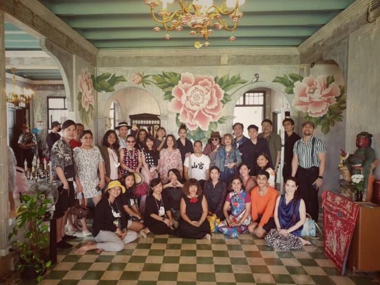
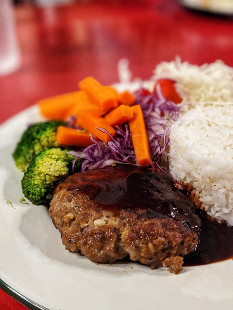
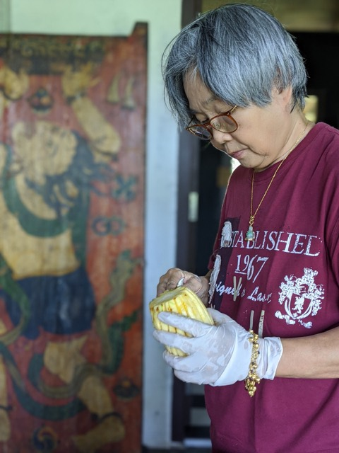

10 รายการ
3 วันคึกคัก สื่อ ลูกค้า และโรงเรียนแวะเยี่ยมบ้านอาจ้อสังคม

+2 รูปในหน้าเหตุการณ์
เพจเที่ยวไทยไม่ตกยุคมาเยี่ยมชมและโปรโมทบ้านอาจ้อสื่อ
เพจอีหล้าพาลุยและ ททท ถ่ายคลิปโปรโมทบ้านอาจ้อสื่อ
บันทึกกักตัว Day 3: ชุดอาหารสุขภาพที่บ้านอาจ้อสื่อ
เปิดตัวเมนูเอิ่มแฮมเบิร์กไรซ์ ร่วมกับ Phuketiqueกิจการ

ขั้นตอนทำปลาสำลีญี่ปุ่นต้มเค็มสูตรบ้านอาจ้อสื่อ

เปิดบริการส่งอาหารบ้านอาจ้อถึงหน้าบ้านทั่วภูเก็ตกิจการ
ขายมัสมั่นไก่โฮมเมดช่วงโควิด ลูกค้าสั่งกันคึกคักกิจการ
แชร์ข่าวโครงการแจกอิ่มกลับบ้าน ช่วยชาวภูเก็ตสู้โควิดสื่อ
หม้อแกงและคุกกี้บ้านอาจ้อขายหมดใน 15 นาที ที่หลาดหม่อหลาวกิจการ